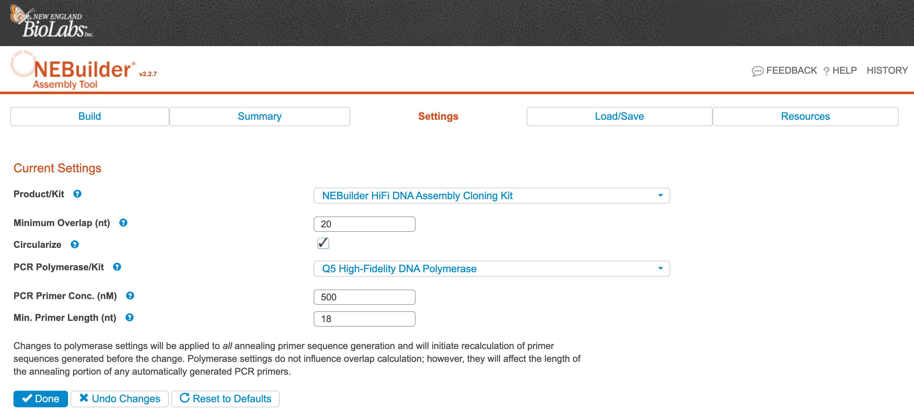
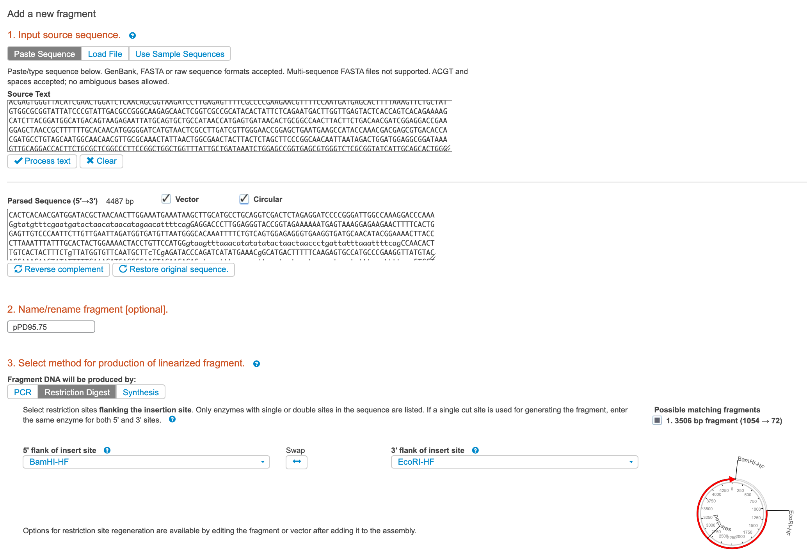
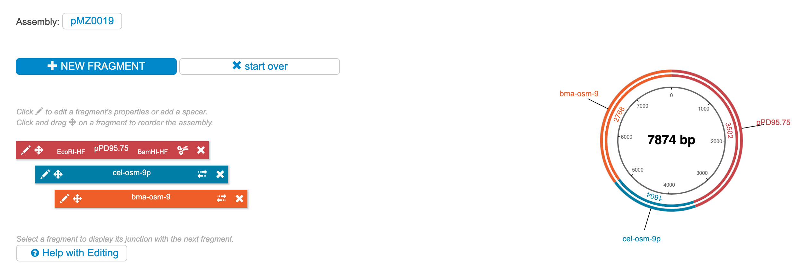

NEB HiFi Assembly
Assembly design
-
To design primers for the pre-assembly PCRs, navigate to the NEBuilder Assembly Tool.
-
Click Settings on the main page.

- Ensure the settings are as expected and that the PCR Polymerase/Kit is set to what you plan to use (we typically use Q5). Click Done.

-
Click NEW FRAGMENT.
a. From Benchling, paste in the sequence of the ENTIRE vector backbone that you plan to clone into, even if you will be performing a double-digest to open it.
b. Give the sequence a name, click PROCESS TEXT, and check VECTOR and CIRCULAR.
c. Select which way you will be linearizing the backbone. If you choose Restriction Digest, select the 5’ and 3’ restriction sites you will be using.
d. Click Add.

-
Click NEW FRAGMENT.
a. It is likely that you will be generating the rest of your fragments via PCR. If this is the case, paste in only the sequence to be amplified. Give the sequence a name and check "Autogenerate primers."
b. Click Add.
-
Repeat step 5 for as many fragments as necessary. When finished, the Build page should look something like below:

-
Now is our chance to add spacers or cut sites in between each fragment. First off, click the pencil icon (edit) on the backbone vector (in this case, pPD95.75).
a. Choose whether or not you want to regenerate the restriction sites. Generally, "Min" is the best choice, but be careful not to change the reading frame if you are assembling a fusion protein.

-
Repeat step 7 if you want to add spacers between other fragments (i.e., you want to generate new cut sites between fragments).
-
Click Done to get the final assembly. Copy the "Assembled Color-coded Sequence" and import it into Benchling for markup and annotation. Ensure the sequence is what you expect it to be and that the junctions between fragments aren't generating new cut sites or abolishing the cut sites you wanted to retain.
-
If all is satisfactory, order the designed oligos. Be sure to include the 3′ Tm and 3′ Ta temperatures, as the 3’ Ta will be used for the PCRs that generate the fragment.
Assembly reactions
-
Prior to assembly, generate all the fragments to be assembled - this may be by either synthesis, restriction digest of a plasmid, or PCR. Things to note:
a. Restriction digest - ensure the digest completed by running an aliquot on a gel. In my experience, you do NOT need to gel purify the correct sized band - the off-target band will not impede the assembly. However, you DO need to inactivate the restriction enzymes. Some NEB enzymes can be heat inactivated at 65°C for 20 minutes, but check the specifications of the enzymes to be used. If you can’t heat inactivate, you will need to purify using the PCR purification kit.
b. PCR - use a high-fidelity polymerase from NEB, typically Q5. The polymerase you choose should correspond to the polymerase you selected when using the NEBuilder Assembly Tool. For these PCR reactions, do 25 μL reactions for 35 cycles, and use the Tm that the Assembly Tool provided (3’ Ta). If the combined PCR products make up greater than ⅕ of the final assembly reaction, you should purify the PCR reactions. In general, it’s probably better to purify.
-
Thaw the reaction constituents on ice. Use the Qubit dsDNA BR kit to quantify every fragment.
-
Calculate how the molar amount of each fragment to include. See the HiFI assembly manual for details on this calculation, which will change depending on the number for fragments being assembled. Use the NEB Calculator for mass to moles conversions.
a. Here is an example of two recent reactions:
Fragment Ratio Assembly #1 Assembly #2 Vector backbone 50 ng 3500 bp (XbaI/EcoRI pPD95.75 fragment) = 0.023 pmol 3500 bp (XbaI/EcoRI pPD95.75 fragment) = 0.023 pmol Fragment 2 2:1 Insert:Vector Molar Ratio 0.046 pmol = 46.76 ng of 1645 bp cel-osm-9p 0.046 pmol = 89.23 ng of 3139 bp cel-tax-4p Fragment 3 2:1 Insert:Vector Molar Ratio 0.046 pmol = 79.79 ng of 2807 bma-osm-9 0.046 pmol = 44.43 ng of 1563 bp bma-tax-4 Total 0.03-0.2 pmols 0.115 pmol 0.115 pmol b. In this case, I started with 50 ng of the backbone and calculated the number of pmols that would be based on the size of the cut fragment that would be assembled. I then multiplied that amount (0.023 pmol) by two to get the 2:1 vector:insert ratio. 0.046 pmol of the 1645 bp cel-osm-9p is 46.76 ng.
c. Using the calculated ng of each fragment and the measured concentration from the Qubit, calculate the volume to be added for a final volume of 5 μL (Note: this is less than the final volume given in the NEB manual, in order to save reagents.) In other words, perform the calculations as recommended in the manual, and then divide all the constituents by 4.
-
Assemble the final reaction in a PCR tube.
a. The example continued:
Fragment Concentration XbaI/EcoRI pPD95.75 11.8 ng/μL cel-osm-9p 120 bma-osm-9 117 cel-tax-4p 95.4 bma-tax-4 95.8 Note: the product coming from the digestion will be much less concentrated than the product from the PCRs unless you cleanup the reaction and elute in a volume of much less than 50 μL.
Fragment Assembly #1 Assembly #2 Vector Backbone 50 ng / 11.8 ng/μL / 4 = 1.06 μL XbaI/EcoRI pPD95.75 fragment 50 ng / 11.8 ng/μL / 4 = 1.06 μL XbaI/EcoRI pPD95.75 fragment Fragment 2 46.76 ng / 120 ng/μL / 4 = 0.10 μL cel-osm-9p 89.23 ng / 95.4 ng/μL / 4 = 0.23 μL cel-tax-4p Fragment 3 79.79 ng / 117 ng / μL / 4 = 0.17 μL bma-osm-9 44.43 ng / 95.8 ng/μL / 4 = 0.12 μL bma-tax-4 NEBuilder MasterMix 2.5 μL 2.5 μL H2O 1.17 μL 1.09 μL Total 5 μL 5 μL -
Set the thermocycler to incubate at 50°C for 15 minutes for 2-3 fragments, or 60 minutes for 4-6 fragments. Store assembly at -20°C or ice for immediate transformation.
Transformation
Prior to transformation:
-
Heat water bath to 42°C
-
Remove from 4°C 1 LB/Amp/IPTG/X-gal plate (or other selection plate) per assembly reaction
-
Move SOC to room temperature
-
Remove the NEB 5-alpha chemically-competent from the -80°C freezer to ice.
-
Aliquot 50 μL of the cells to a chilled 1.5 mL tube. Return the competent cells to the -80°C freezer.
-
Add 2 μL of the chilled assembled product to the competent cells. Mix gently by pipetting up and down or by flicking the tube 4–5 times. Do not vortex.
-
Place the mixture on ice for 30 minutes. Do not mix.
-
Heat shock at 42°C for 30 seconds. Do not mix.
-
Transfer tubes to ice for 2 minutes.
-
Add 950 μL of room-temperature SOC media to the tube.
-
Incubate the tube at 37°C for 60 minutes. Shake vigorously (250 rpm) or rotate.
-
Spread 100 μL of the cells onto the selection plates.
-
Incubate overnight at 37°C.